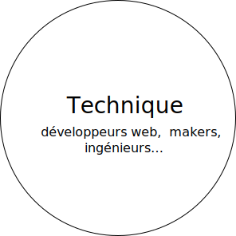
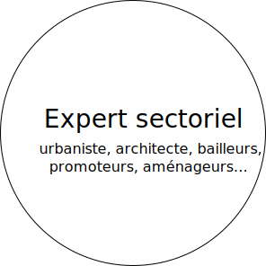
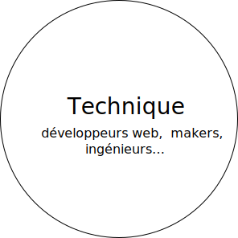
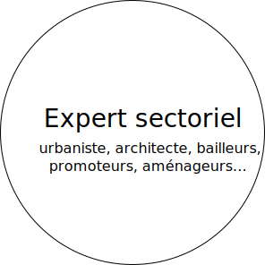

Innovation Lab
Bootcamp d’innovation interdisciplinaire, de l’analyse d’un problème complexe au prototypage fonctionnel. Des formations gratuites grâce à nos partenaires.

Concept de l’Innovation Lab
L’Innovation Lab est une formation à l’innovation responsable par le design
Interdisciplinaire
Chaque promotion est interdisciplinaire et réunit des profils variés issus des métiers du design, des technologies, des sciences sociales, de l’entreprenariat.
Concret
Chaque lab travaille sur une thématique spécifique, et explore des problématiques concrètes identifiées avec les partenaires professionnels de la Plateforme.
Responsable
L’innovation Lab place l’impact sociétal au coeur de ses objectifs, et propose des enseignements qui ouvrent vers des modèles de circularité, de décentralisation, de co-design et d’éco-conception.
Métiers
La finalité du lab est de former des chefs de projets capable de travailler dans différents environnements, d’apporter une analyse complexe des problématiques et de piloter la recherche de solutions innovantes par le design centré usagers
Profils des candidats
Jeunes diplômés, professionnels en reconversion, chercheurs, freelance… nous sélectionnons des talents complémentaires pour former des équipes interdisciplinaires :
 


